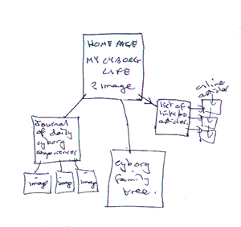

We now turn to the second innovative characteristic of the web for creative work: the ability to allow clickable links, known as hyperlinks or hypertext. In fact, for many people hypertext is the web.
A useful way to begin to understand the connectivity of the web is to make your own links. This is relatively straightforward, once you have got used to being very precise with your typing.
LINK TO ANOTHER WEB SITE
This is written via a tag that needs to be opened and closed.
Choose a web page you would like to link to - it could be one of a favourite writer, a home page of a friend, or your favourite band. Note the URL (address of the first page of the site). (The easiest way is to highlight this in the bar above the page, then copy it ready to paste into your tag.)
This is the tag you use:
< A HREF="http://www.website" >your text < /A>
Be sure that:
- there are no spaces between the tag and the text
- you enter the full URL
example - here is the HTML for a link to The Center for Women and Information Technology at Maryland University, Baltimore County, USA
< A HREF="http://www.umbc.edu/cwit/" > CWIT < /A>
The link is live - try it!
LINKS BETWEEN YOUR OWN PAGES
When you have written more than one page you can make links between them. This is the tag you use:
< A HREF="yourpage.html" >linking text < /A>
example- here is the HTML code for a link to the first web page lesson:
< A HREF="webpage1.html > A Simple Web Page < /A>
I could have written anything instead of 'A Simple Web Page' - written a whole paragraph, or inserted an image (see next lesson): it's the < A > tags that do the work.
A LINK TO YOUR OWN EMAIL ADDRESS
This is the tag I would use:
< A HREF="mailto:eakn1@york.ac.uk" > email me < /A>
This HTML opens up an email message page. Try the one above to see what happens - and send me a message when you reach this point.
LINKING FROM IMAGES
This is covered in lesson four.
EXERCISE: MAKING YOUR CONNECTIONS
Plan a simple web site on paper with a home page and at least five links. These should include a link between at least two pages of your own, as well as links to other pages on the net and a live email link. This is an exercise, not a definitive site, so don't worry too much about what you choose. Scribble your ideas, include arrows to show where you will put the links and which direction they will link. Your plan might look something like this.

Now transfer your plan to an electronic format and save your work in your WEBPAGES folder.
links:
lesson one: A Simple Web Page lesson two: Simple Formatting
lesson four: Images
back to wws index